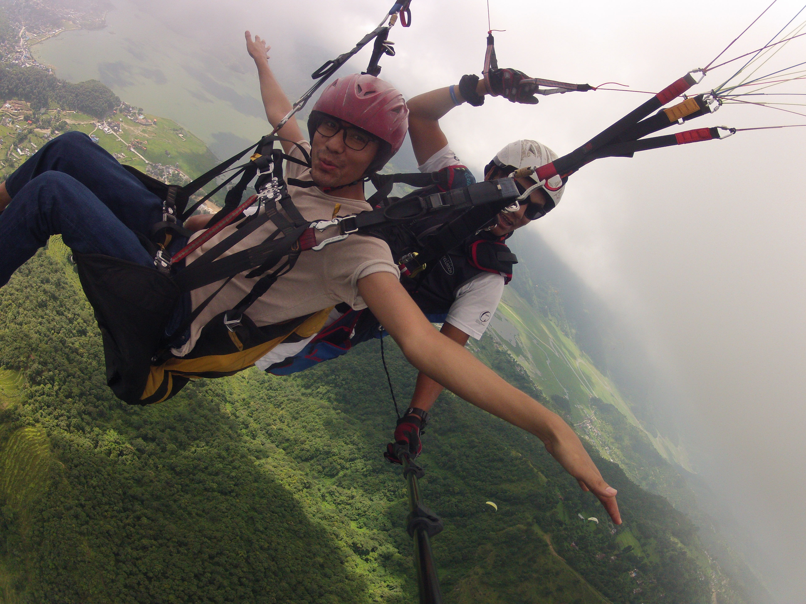
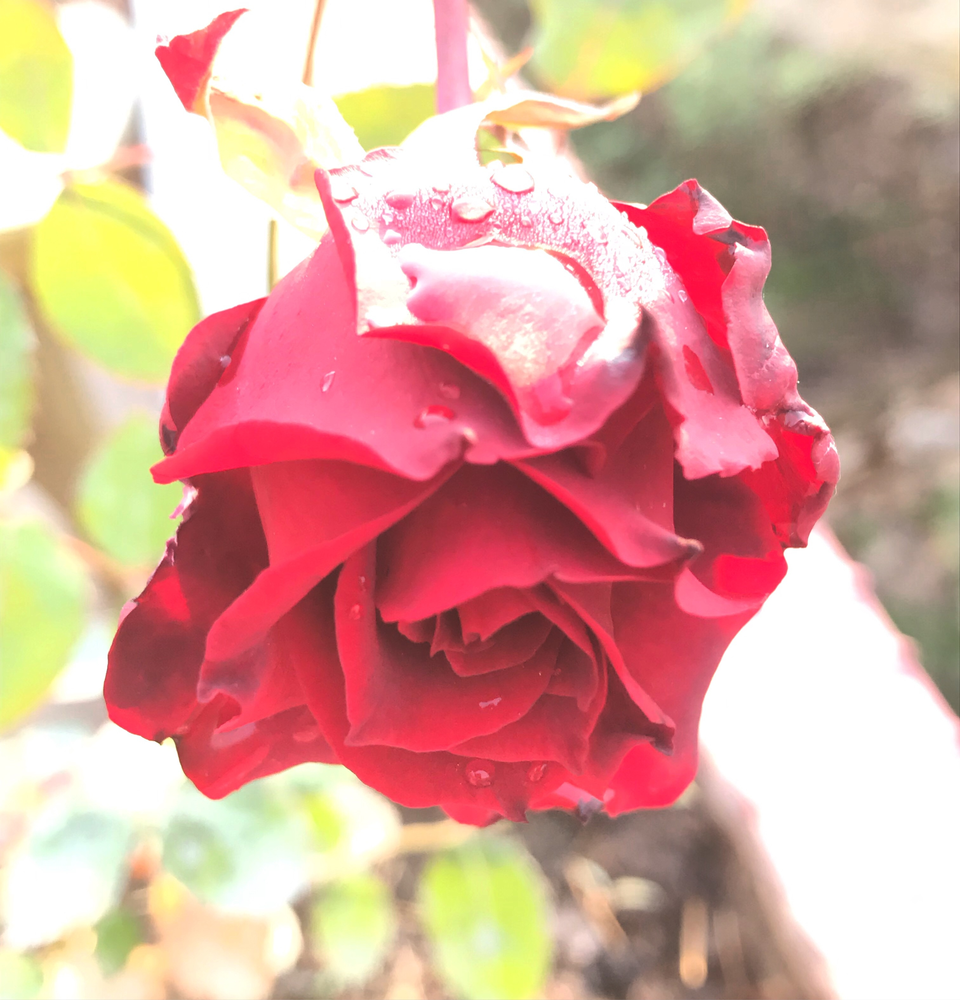
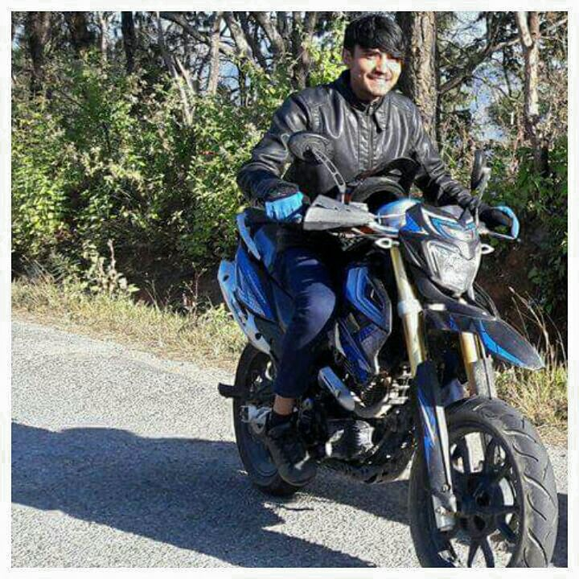
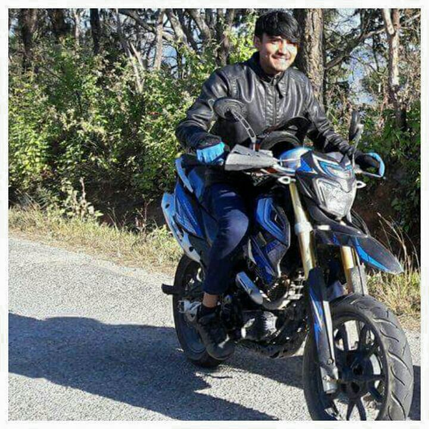

Football Travelling Photography Scouting Bike Riding
Football
My favourite sport is Football. I love both playing & watching football matches. Since my childhood I like brazilian footballer Ronaldo de Assis Moreira also known as Ronaldinho. His skills & playing strategy is mind blowing. My favourite football club is Barcelona.
Travelling
I love to travel, explore places & be with myself away from everything. And always try to complete my bucket list of adventures while travelling.

Photography
Capturing moments is also one my interest & i do it anywhere where i like to click. Flowers, Sunrise, Sunset & Clouds are my favourite to capture.

Scouting
I am thankful to the non-profit organization which educate me in the filed of Intellectual, Social behaviours, Spiritual and Emotional development. Once a scout always scout. I like to involve in social services.
Bike Riding
Riding motorbike is always full of fun & adventure. I like rain & love to go on a ride when it rains in free time.


 
